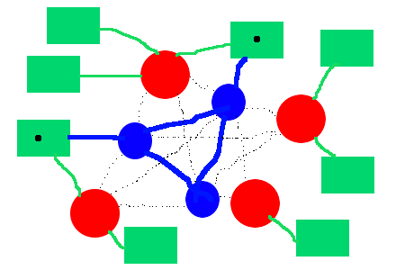

|
Query Client -> Server: query://ggz/connection/0.0.5pre Result Server -> Client: ggz://ggz.snafu.de:5688 |
|
Query Client -> Server: <?xml version="1.0"?> <query class="ggz" type="connection"> 0.0.5pre </query> Result Server -> Client: <?xml version="1.0"?> <resultset referer="query"> <result preference="100"> <uri>ggz://jzaun.com:5688</uri> <location>pennsylvania, us</location> </result> </resultset> |

|
A typical web of GGZ meta servers  |